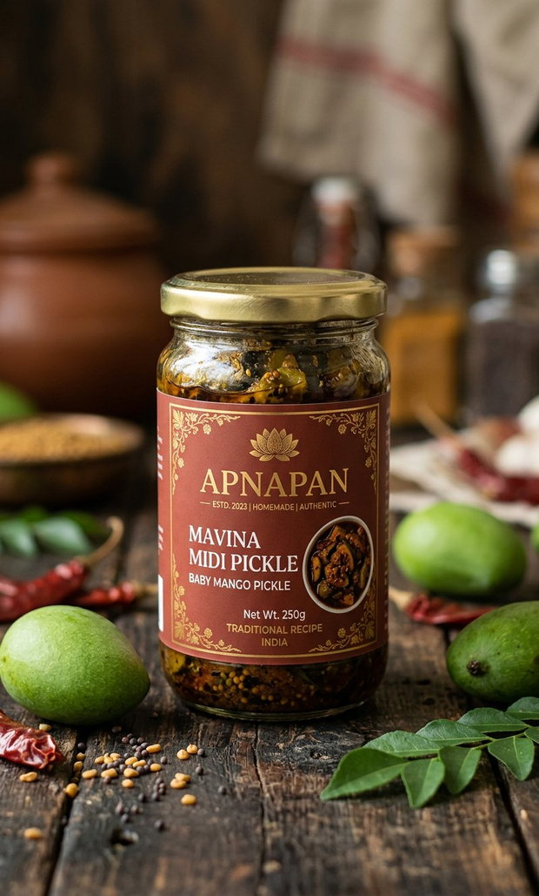
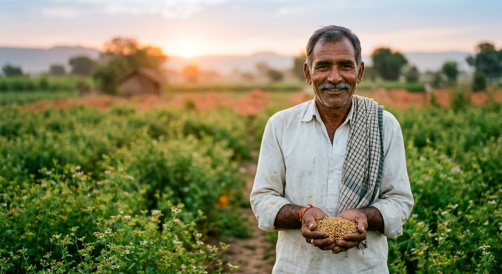
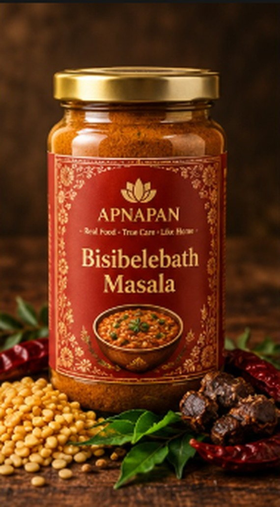
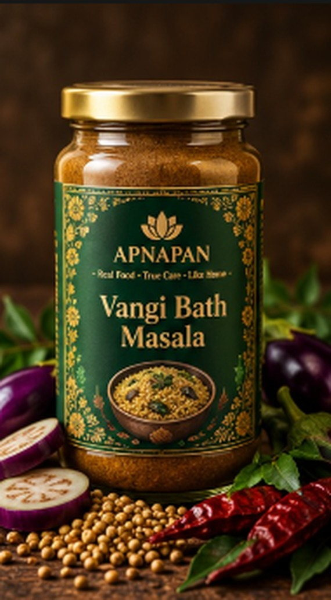
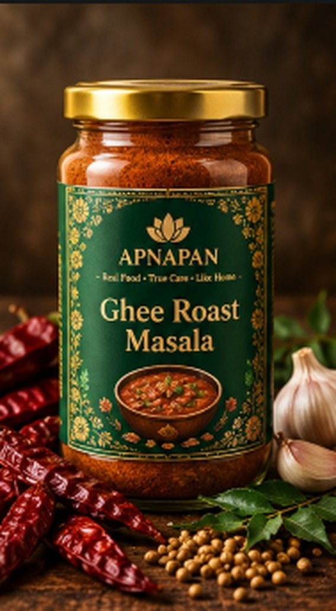

Sridevi K. · Bengaluru
This is exactly my mother's pickle. I bought one jar to try, and then three more the following week for my sisters.

Sun-curedNo preservativesಮಾವಿನ ಮಿಡಿ ಉಪ್ಪಿನಕಾಯಿ · कच्चे आम का अचार
Tiny whole baby mangoes cured in mustard and chilli. Sharp, chewy, and dangerously habit-forming.
Gowramma D., Pickle kitchen lead — with us since 2019. “I have made this every June for thirty years at home. Now I make it for four thousand people. Same twelve kilos of mustard.”
Baby mango pickle is a June project. The mangoes are picked while the stone is still soft — usually the last week of May to mid-June — and must go into salt within a day of plucking. We split each midi at the tip, pack it with hand-pounded mustard, Byadagi chilli, fenugreek and rock salt in mustard oil, and then it is simply sun and time: fourteen days on our terrace, stirred every morning, no acetic acid and no preservatives.
Serve 2–3 midis with curd rice, dal rice or chapati. The oil at the top is part of the pickle — spoon it over, do not drain it.
Storage: Always use a dry spoon. Keep the mangoes under the oil layer. Do not refrigerate before opening. · Shelf life: 18 months; improves for the first 6 · Spice level: Medium-hot
18 months; improves for the first 6
Always use a dry spoon. Keep the mangoes under the oil layer. Do not refrigerate before opening.
Medium-hot
Moisture, salt, pH and microbial tests on every lot. Batch code on the pack traces to the lab report.
Nothing in this jar except what the label says. Each line names the farmer or the district it came from.
Typical values per 100 g
| Energy | 168 kcal |
|---|---|
| Protein | 3.2 g |
| Carbohydrates | 14.6 g |
| — of which sugars | 5.1 g |
| Fat | 10.4 g |
| — of which saturated | 1.3 g |
| Dietary fibre | 4.8 g |
| Sodium | 3.1 g |
Values are typical averages for a spice blend and vary slightly by batch. Not a substitute for medical or dietary advice.
No preservatives, no artificial colours, no anti-caking agents, no added starch or bulking flour, no refined sugar. Pickles use no acetic acid or vinegar — only rock salt, sun and oil.
This is the part most brands leave out. Here is exactly who grew what went into this batch, and what it was bought at.

Chikkaballapur, Chikkaballapur · Mango (midi)
Partner since 2021. “The midi used to be the crop nobody wanted — too small for the market. Now it is the first harvest we look forward to.”
Pickle kitchen lead · with ApnaPan since 2019
“I have made this every June for thirty years at home. Now I make it for four thousand people. Same twelve kilos of mustard.”
Our agreement price for this produce averaged 22% above the local mandi rate for the same grade, and payment was transferred within 7 working days of weighing at the farm gate. Full cost sheet: read the sourcing note.
This is exactly my mother's pickle. I bought one jar to try, and then three more the following week for my sisters.
The salt is right, the mangoes are crunchy, and the oil is real mustard oil. Almost impossible to find these days.
Beautifully sharp. I would like a slightly larger jar size for a family of six.

Bestseller14% offThe Bengaluru classic — rice, dal and vegetable kootu in one pot. Deep, warm and properly spiced.
Meet the women who made this: Shivamma B.

12% offBrinjal rice with the sweet-sour balance Karnataka gets right. Also excellent with potatoes or capsicum.
Meet the women who made this: Lakshmidevi N.

Bestseller11% offThe Mangalorean ghee roast, in a jar. Use it for chicken, prawns, mushrooms or paneer.
Meet the women who made this: Sunita K.